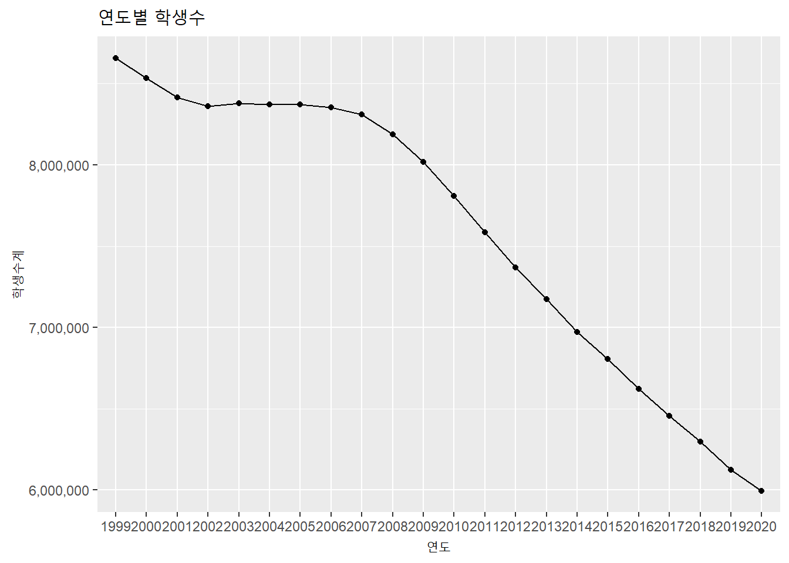

4.4 주간, 월간 데이터는? : 시간 Grouping
시계열 데이터를 사용할 때 많이 사용하는 계산은 월별 평균, 주별 합계 등 일정 단위별로 그룹핑한 후 그룹함수를 적용하여 산출하는 작업이다.
아쉽게도 앞서 사용한 lubridate 패키지에서는 시계열 데이터를 주단위, 월단위, 년단위 등으로 그룹핑하는 함수를 제공하지 않는다. 따라서 lubridate 함수를 이용하여 그룹화하기 위해서는 dplyr에서 제공하는 파이프 연산자인 %>%와 함수를 같이 사용하여 산출할 수 있다.
하지만 앞장에서 소개한 timetk 패키지에서는 그룹핑하여 평균을 내거나 합계를 내는 함수를 제공하기 때문에 이를 사용할 수도 있다.
이번 절에서는 lubridate와 dplyr를 사용하는 방법과 timetk를 사용하는 방법으로 분리해서 설명하겠다.
lubridate,dplyr패키지
먼저 그룹핑을 하기 위한 단위를 설정하기 위해 lubridate 패키지의 year(), month(), week() 등의 함수를 사용하여 해당 일의 년, 월, 주등을 산출하고 mutate 함수를 사용하여 컬럼으로 만들어준다. 다음 group_by 함수를 사용하여 데이터를 그룹핑하고 summarise 함수를 통해 sum(), mean() 등의 그룹 함수를 사용하여 원하는 값을 산출한다.
library(dplyr)
library(ggplot2)
### 월별 취업자수를 연별 취업자수로 그룹핑
(employees.by.year <- employees %>%
mutate(year = year(time)) %>%
group_by(year) %>%
summarise(total.year = sum(total),
employees.edu = sum(employees.edu)))## # A tibble: 8 x 3
## year total.year employees.edu
## * <dbl> <int> <int>
## 1 2013 303592 21192
## 2 2014 310766 21957
## 3 2015 314133 22028
## 4 2016 316910 22350
## 5 2017 320698 22886
## 6 2018 321866 22165
## 7 2019 325474 22600
## 8 2020 322852 21570employees.by.year %>%
ggplot(aes(as.factor(year), total.year)) +
geom_line(aes(group = 1)) +
geom_text(aes(label = scales::number(total.year, big.mark = ',')), size = 3, vjust = 1.5) +
labs(title = '연별 취업자수', x = '연도', y = '취업자수') +
scale_y_continuous(labels = scales::number_format(big.mark = ','))
### 일별 확진자수를 월별 확진자수로 그룹핑
covid19 %>%
mutate(month = month(date), year = year(date)) %>%
group_by(month, year) %>%
summarise(total.1대확진자 = sum(`0-9세`),
total.10대확진자 = sum(`10-19세`),
total.20대확진자 = sum(`20-29세`),
total.30대확진자 = sum(`30-39세`),
total.40대확진자 = sum(`40-49세`),
total.50대확진자 = sum(`50-59세`),
total.60대확진자 = sum(`60-69세`),
total.70대확진자 = sum(`70-79세`),
total.80대확진자 = sum(`80세 이상`))## # A tibble: 11 x 11
## # Groups: month [11]
## month year total.1대확진자 total.10대확진자 total.20대확진자
## <dbl> <dbl> <dbl> <dbl> <dbl>
## 1 1 2021 893 1433 2241
## 2 2 2021 188 NA 412
## 3 4 2020 14 42 120
## 4 5 2020 16 62 214
## 5 6 2020 31 48 171
## 6 7 2020 53 74 258
## 7 8 2020 196 363 700
## 8 9 2020 136 161 442
## 9 10 2020 112 137 387
## 10 11 2020 301 593 1298
## 11 12 2020 1016 1589 3010
## # ... with 6 more variables: total.30대확진자 <dbl>, total.40대확진자 <dbl>,
## # total.50대확진자 <dbl>, total.60대확진자 <dbl>, total.70대확진자 <dbl>,
## # total.80대확진자 <dbl>또 하나의 방법은 tibbletime 패키지에서 제공하는 collapse_by() 함수를 사용하는 방법이다. collapse_by() 함수는 시간 인덱스열을 직접 컨트롤하여 매개변수로 전달된 기간마다 데이터를 접은(collapse) 후에 group_by() 함수를 이용해 그룹핑하여 기간별 데이터를 산출할 수 있다.4 다만 collapse_by()함수를 사용하려면 tibbletime 패키지를 설치, 로딩해야하며 tbl_time 클래스 객체로 변환된 데이터 객체에 한해서 사용할 수 있다.
library(tibbletime)
as_tbl_time(covid19, index = date) %>%
collapse_by('weekly') %>%
group_by(date) %>%
summarise(`1대`= sum(`0-9세`),
`10대` = sum(`10-19세`),
`20대` = sum(`20-29세`),
`30대` = sum(`30-39세`),
`40대` = sum(`40-49세`),
`50대` = sum(`50-59세`),
`60대` = sum(`60-69세`),
`70대` = sum(`70-79세`),
`80대` = sum(`80세 이상`)) %>%
head(10)## # A time tibble: 10 x 10
## # Index: date
## date `1대` `10대` `20대` `30대` `40대` `50대` `60대` `70대` `80대`
## <date> <dbl> <dbl> <dbl> <dbl> <dbl> <dbl> <dbl> <dbl> <dbl>
## 1 2020-04-11 4 10 24 13 12 11 15 2 5
## 2 2020-04-18 8 18 62 21 13 18 16 11 6
## 3 2020-04-25 1 10 19 7 8 9 4 3 4
## 4 2020-05-02 1 4 23 17 10 3 2 1 1
## 5 2020-05-09 1 4 19 17 8 2 6 1 2
## 6 2020-05-16 6 25 95 32 16 8 9 4 2
## 7 2020-05-23 1 12 29 12 17 6 5 3 0
## 8 2020-05-30 8 21 54 54 43 50 32 7 7
## 9 2020-06-06 6 5 26 24 26 39 44 27 8
## 10 2020-06-13 4 17 43 38 27 69 74 37 23- timetk 패키지
timetk 패키지에서는 그룹핑을 위해 summarise_by_time() 함수를 제공한다. 매개변수로 .date_var(시간컬럼), .by(그룹핑 단위) 등을 설정하고 산출하기 원하는 컬럼명과 그룹함수를 기재하여 원하는 값을 얻을 수 있다.
library(timetk)
covid19 %>%
summarise_by_time(.date_var = date, .by = 'week',
`1대`= sum(`0-9세`),
`10대` = sum(`10-19세`),
`20대` = sum(`20-29세`),
`30대` = sum(`30-39세`),
`40대` = sum(`40-49세`),
`50대` = sum(`50-59세`),
`60대` = sum(`60-69세`),
`70대` = sum(`70-79세`),
`80대` = sum(`80세 이상`))## # A tibble: 45 x 10
## date `1대` `10대` `20대` `30대` `40대` `50대` `60대` `70대` `80대`
## <date> <dbl> <dbl> <dbl> <dbl> <dbl> <dbl> <dbl> <dbl> <dbl>
## 1 2020-04-05 4 10 24 13 12 11 15 2 5
## 2 2020-04-12 8 18 62 21 13 18 16 11 6
## 3 2020-04-19 1 10 19 7 8 9 4 3 4
## 4 2020-04-26 1 4 23 17 10 3 2 1 1
## 5 2020-05-03 1 4 19 17 8 2 6 1 2
## 6 2020-05-10 6 25 95 32 16 8 9 4 2
## 7 2020-05-17 1 12 29 12 17 6 5 3 0
## 8 2020-05-24 8 21 54 54 43 50 32 7 7
## 9 2020-05-31 6 5 26 24 26 39 44 27 8
## 10 2020-06-07 4 17 43 38 27 69 74 37 23
## # ... with 35 more rowsemployees %>%
summarise_by_time(.date_var = time, .by = 'month',
total.year = sum(total),
employees.edu = sum(employees.edu)) %>%
head(10)## # A tibble: 10 x 3
## time total.year employees.edu
## <date> <int> <int>
## 1 2013-01-01 24287 1710
## 2 2013-02-01 24215 1681
## 3 2013-03-01 24736 1716
## 4 2013-04-01 25322 1745
## 5 2013-05-01 25610 1774
## 6 2013-06-01 25686 1786
## 7 2013-07-01 25681 1813
## 8 2013-08-01 25513 1811
## 9 2013-09-01 25701 1794
## 10 2013-10-01 25798 1790- xts 패키지
data.frame 클래스의 시계열 객체는 위와 같이 dplyr 패키지의 기능을 이용해 그룹핑하고 그룹함수를 적용용하지만 xts 클래스에서는 시간 유닛별로 그룹핑하여 그룹함수를 적용할 수 있는 함수를 지원한다. 따라서 연 평균, 월 합계와 같은 작업에 편리하게 사용할 수 있다.
apply.monthly(employees.xts, sum) %>% head(10)## [,1]
## 2013-01-01 25997
## 2013-02-01 25896
## 2013-03-01 26452
## 2013-04-01 27067
## 2013-05-01 27384
## 2013-06-01 27472
## 2013-07-01 27494
## 2013-08-01 27324
## 2013-09-01 27495
## 2013-10-01 27588apply.weekly(employees.xts, sum) %>% head(10)## [,1]
## 2013-01-01 25997
## 2013-02-01 25896
## 2013-03-01 26452
## 2013-04-01 27067
## 2013-05-01 27384
## 2013-06-01 27472
## 2013-07-01 27494
## 2013-08-01 27324
## 2013-09-01 27495
## 2013-10-01 27588apply.quarterly(employees.xts, sum) %>% head(10)## [,1]
## 2013-03-01 78345
## 2013-06-01 81923
## 2013-09-01 82313
## 2013-12-01 82203
## 2014-03-01 80977
## 2014-06-01 83779
## 2014-09-01 84226
## 2014-12-01 83741
## 2015-03-01 82095
## 2015-06-01 84488